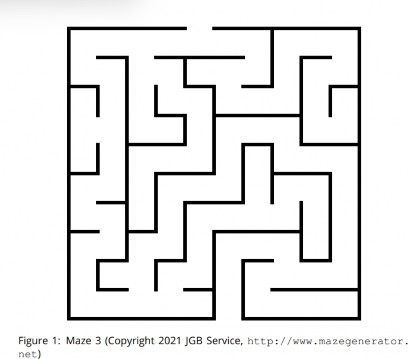

Group Members:
Norah Albeshri
Salman Ashraf
Charles Charles-Fredrick
Olive Kanengoni
Yousef Morfeq
Alexander Tate

Assumptions:
Whenever you turn right, turn clockwise by 90 degrees.
Whenever you turn left, turn anti-clockwise by 90 degrees.
A neighbour is a surrounding space that is not a wall.
A neighbour can be either visited or unvisited.
A neighbour is either ahead, left or right.
Primitives:
Move forward
Turn left
Turn right
Backtracking
Operations:
START
step inside the maze
REPEAT
IF there is only one unvisited neighbour, move towards it
IF there are two or more unvisited neighbours, move towards
a random one and mark the junction before you move
IF you encounter a dead-end backtrack to the most recent
junction with any unvisited neighbours
UNTIL you reach an exit
END